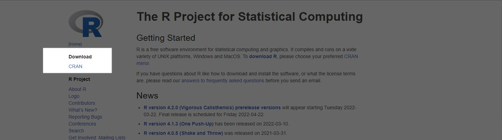
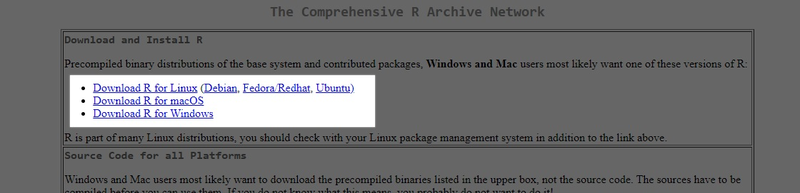
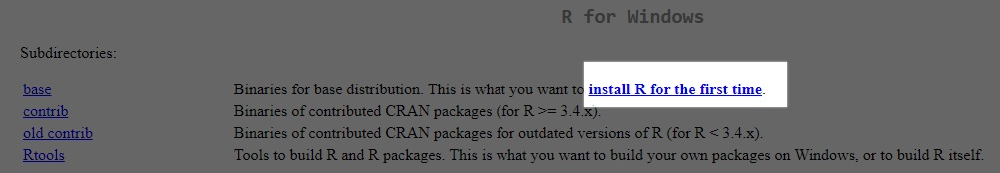
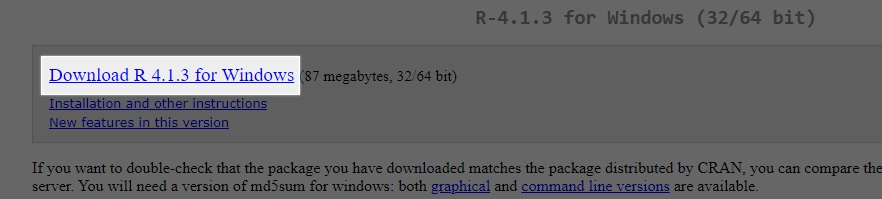

Repositorio UTEM
Bienvenidos al repositorio UTEM
Click para ver la imagen de la utemEn este repositorio se encuentra contenido la informacion basica de programacion en R.
¿Que es R?
R es un lenguaje de programacion orientado a objetos, desarrollado con el fin de realizar analisis de datos. Es un lenguaje de programacion muy potente orientado a la matematica estadistica. R es un lenguaje utilizado por muchos editores de texto como "Visual Studio Code", "Notepad++","Atom", entre otros muchos editores de texto, pero R tiene su propio editor de texto especializado en el lenguaje, a esto se le conoce como IDE (Entorno de Desarrollo Integrado) y el IDE de R tiene el nombre de RStudio. Por lo tanto, cuando nos referimos a R nos referimos al lenguaje de programacion como tal y por lo tanto debemos distinguirlo de su IDE llamado RStudio ya que son cosas diferentes
Ya que sabemos diferenciar R de RStudio podemos seguir con la descarga y la instalacion de R y de RStudio
Como descargar R
Lo primero que debemos hacer es instalar el lenguaje de programación R, para esto debemos ir al repositorio oficial del projecto Ra
Una vez dentro de la pagina R Project, debemos dar click en la seccion "CRAM", la cual se encuentra en la parte izquierda de la pagina web como se ve en la imagen.
Dentro de CRAM podemos encontrar repositorios de diversos paises del mundo, los cuales contienen los archivos necesarios para instalar el lenguaje de R. Siguiendo la instalacion, debemos dar click a algun repositorio de cualquier país (Esto no afecta en nada la instalacion ni el idioma, puedes escoger cualquie repositorio que esté en funcionamiento). Tras dar click en algun repositorio nos encontraremos en la pagina de descargas y una vez dentro de la pagina de descargas debemos dar click en alguno de los links resaltados en la imagen de abajo segun el tipo de sistema operativo que tenga tu equipo. (En la mayoria de los casos el sistema operativo es Windows).
Finalmente debemos dar click en "install R for the first time", lo cual nos redirigirá a una nueva pagina que contiene el link de descarga del lenguaje R, una vez dentro de esta pagina debemos dar click en "DOWNLOAD R 4.1.3 FOR [TU SISTEMA OPERATIVO]", luego de dar click nos descargará un archivo. Una vez descargado el archivo debemos ubicar el archivo descargado en nuestro equipo y darle doble click para continuar con la instalacion del lenguaje R
 Como instalar R
Siguiendo con lo anterior, luego de haber dado doble click al archivo descargado nos aparecerá la ventana de instalación. La instalacion de R es como la instalacion de cualquier otro programa pero hay ciertos aspectos a considerar los cuales podrian afectar nuestra comodidad al momento de utilizar el lenguaje. Primero debemos seleccionar nuestro lenguaje de preferencia para la instalacion (esto es para el instalador, no para el uso final de R), luego damos siguiente, seleccionamos el lugar donde se instalará el lenguaje R,